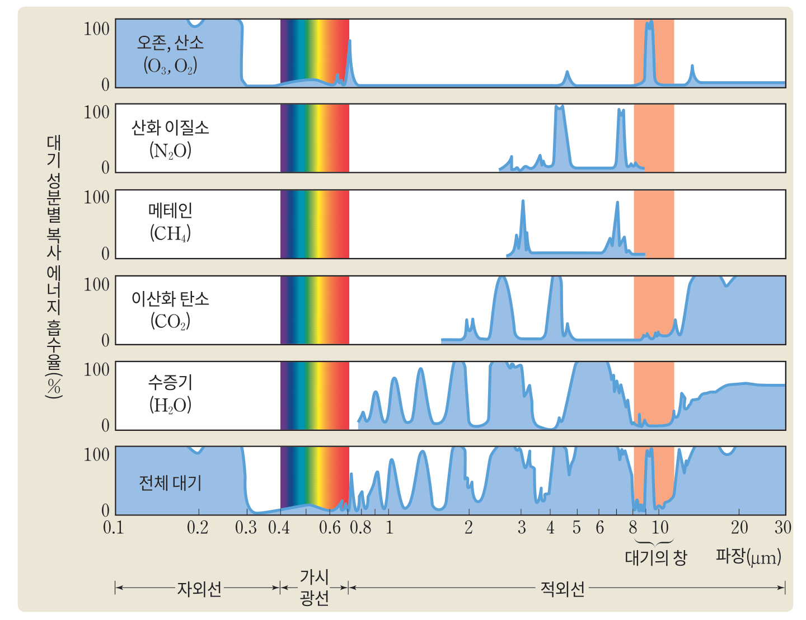
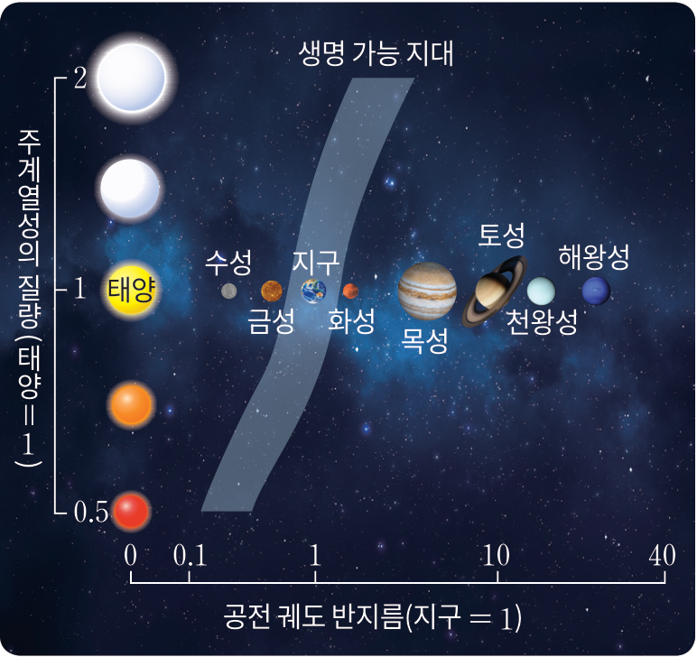
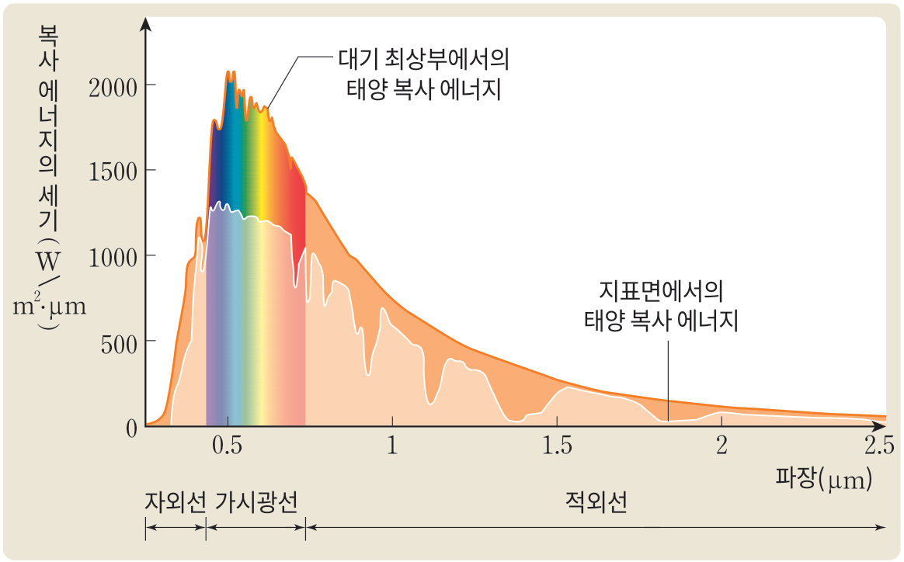

실험 장치는 모식 그림 · 온도는 통합과학 교과서 탐구의 측정값(2분 간격, 25.4 ℃ → 50.0 ℃) · 24분을 몇 초로 줄여 보임
1선택적 흡수1학년 통합과학 복습
복사 평형
복사 평형어떤 물체가 흡수하는 복사 에너지양과 방출하는 복사 에너지양이 같은 상태
1) 온도가 상승하는 구간흡수하는 복사 에너지양 >방출하는 복사 에너지양
2) 온도가 일정한 구간흡수하는 복사 에너지양 =방출하는 복사 에너지양
모식 그래프
1선택적 흡수1학년 통합과학 복습
지구의 복사 평형
복사 에너지물체의 표면에서 복사에 의해 방출되는 에너지
복사 평형물체가 흡수하는 복사E의 양과 방출하는 복사E의 양이 같아서 온도가 일정하게 유지되는 상태
모식 그림 · 크기와 거리는 실제 비율과 다름
1선택적 흡수
태양 복사 에너지와 지구 복사 에너지
빈의 변위 법칙
λmax = a / T
표면 온도가 높을수록 λmax가 짧다
태양 복사표면 온도 약 5800 K인 태양은 가시광선1 영역의 0.5 μm2 부근에서 복사 에너지의 세기가 최대 → 파장이 짧은 단파 복사3
지구 복사표면 온도 약 288 K인 지구는 적외선4 영역의 10 μm5 부근에서 복사 에너지의 세기가 최대 → 파장이 긴 장파 복사6
교과서 그림 III-2와 같은 축에 흑체의 플랑크 곡선을 계산해 그림(태양 5800 K, 지구 288 K) · 두 그래프의 세로축 눈금은 다름
1선택적 흡수
지구 대기의 선택적 흡수
지구의 대기는 특정 파장의 복사 에너지는 흡수하고 다른 파장의 복사 에너지는 투과시키는 선택적 흡수체1이다.

오존, 산소 분자파장이 짧은 자외선2을 선택적으로 흡수한다.
수증기, 이산화 탄소 등주로 파장이 긴 적외선3을 선택적으로 흡수한다.
가시광선대기에 거의 흡수되지 않고 지표4까지 도달한다.
8 μm~13 μm인 파장 영역지구 복사 에너지가 대부분 우주 공간으로 빠져나가는 영역 → 대기의 창5
1선택적 흡수
직접 해 보기 — 대기를 지나는 빛
영역가시광선
전체 대기 흡수율약 10 %
모식 그림 · 흡수율은 교과서 그림 III-3의 전체 대기 곡선을 어림한 값 · 대기층 두께와 물결의 파장은 실제 비율과 다름
2생명체의 존재 조건
지구 생명체의 존재 조건 ① 액체 상태의 물
지구는 표면에 액체 상태의 물이 풍부하게 존재한다.
1.물은 비열1이 커서 쉽게 가열되거나 냉각되지 않는다.
2.물은 다양한 물질을 쉽게 녹인다2.
3.액체 상태의 물은 얼음보다 밀도3가 커서 강이나 호수의 물이 수면4부터 언다. → 기온이 낮은 겨울에도 수중 생명체가 생존할 수 있다.
⇒ 생명체가 발생하고 진화하기에 적당한 환경을 제공한다.
2생명체의 존재 조건
지구 생명체의 존재 조건 ② 대기와 오존층
지구의 대기는 생명 활동에 필요하고, 유해한 복사 에너지로부터 생명체를 보호한다.
지구는 크기가 적당하고 중력1을 가지고 있어 대기를 유지할 수 있다.
오존층성층권2에 존재하며, 태양 복사 에너지 중 자외선3을 흡수해 지표까지 들어오는 것을 막는다. 자외선: 동물의 유전자 변형, 식물의 엽록소 파괴
온실 효과온실 기체가 지표에서 방출된 적외선이 우주로 직접 빠져나가는 것을 막아 평균 표면 온도를 약 15 °C4로 유지한다.
2생명체의 존재 조건
생명 가능 지대
생명체가 존재하려면 에너지를 안정적으로 공급하는 별과 표면의 액체 상태의 물1이 있어야 한다.

생명 가능 지대별의 주위에서 액체 상태의 물이 존재할 수 있는 거리의 범위2
주계열성의 질량과 생명 가능 지대주계열성의 질량이 클수록 광도3가 증가해 생명 가능 지대는 별에서 멀어지고4 폭도 넓어진다5.
태양계의 생명 가능 지대현재 금성과 화성 사이6에 위치한다.
2생명체의 존재 조건
직접 해 보기 — 별이 밝아지면 생명 가능 지대는?
생명 가능 지대 안의 행성지구
생명 가능 지대의 폭현재의 1.0배
모식 그림 · 현재 태양일 때의 범위는 교과서 그림 III-4에 맞춤 · 경계 거리는 광도의 제곱근에 비례하도록 계산 · 위: 10배씩 커지는 눈금, 아래: 실제 거리 비율
2생명체의 존재 조건
금성 · 지구 · 화성 — 생명 가능 지대만으로 충분할까?
구분
금성
지구
화성
태양과의 거리 (AU)
0.7
1
1.5
대기압 (지구 = 1)
90
1
0.01
대기 조성 (%)
이산화 탄소 (약 96.5), 질소(약 3.5)
질소 (약 78), 산소(약 21)
이산화 탄소 (약 96), 질소(약 2)
반사도
0.78
0.3
0.17
표면 온도 (°C)
약 453
약 15
약 −63
생명 가능 지대에 있으면서 적절한 온실 효과를 일으키는 대기가 있어야 액체 상태의 물이 존재할 수 있다
2생명체의 존재 조건
온실 효과
온실 효과대기 중의 기체가 적외선1 영역의 지구 복사 에너지를 흡수했다가 지표로 재복사2해 지표의 온도를 높이는 현상
온실 기체적외선을 흡수해 온실 효과를 일으키는 기체 — 대표적으로 수증기3와 이산화 탄소4 (메테인, 산화 이질소 등도)
교과서 그림 III-5를 움직이는 그림으로 · −18 °C와 15 °C는 참고서 값 · 대기층 두께는 실제보다 크게 그림
2생명체의 존재 조건
스스로 확인하기 — 지구의 대기와 생명체
1지구의 대기를 구성하는 기체들이 선택적 흡수체임을 설명해 보자.
예시 답안대기 중 오존과 산소 분자는 자외선을, 수증기와 이산화 탄소 등은 적외선을 선택적으로 흡수한다. 가시광선은 대기에 거의 흡수되지 않고 지표까지 도달한다. 이와 같이 지구의 대기는 특정 파장의 복사 에너지는 흡수하고 다른 파장의 복사 에너지는 투과시키는 선택적 흡수체이다.
2오존층이 지구 생명체의 존재에 어떤 역할을 하는지 설명해 보자.
예시 답안오존층은 동물의 유전자를 변형시키고 식물의 엽록소를 파괴하는 등 생명체에 해로운 영향을 주는 자외선을 흡수해 자외선이 지표까지 들어오는 것을 막아 지구의 생명체를 보호한다.
3| 창의력 더하기 |태양의 광도가 현재보다 증가한다면 태양계의 생명 가능 지대는 현재와 비교해 어떻게 달라질지 설명해 보자.
예시 답안태양의 광도가 현재보다 증가하면 태양계의 생명 가능 지대는 현재보다 태양에서 더 먼 곳으로 이동하고, 생명 가능 지대의 폭도 더 넓어질 것이다.
교과서 87쪽 스스로 확인하기 · 예시 답안: 교과서(교사용)
3열 출입
지구의 기온은 왜 계속 오르지 않을까?
지구는 태양으로부터 끊임없이 에너지를 받고 있지만 지구의 평균 기온은 거의 일정하게 유지되고 있다.
까닭지구는 태양으로부터 받는 만큼의 에너지를 우주 공간으로 방출1하기 때문이다.
모식 그래프(숫자 없음) · 지구에 도달하는 에너지: 태양이 방출하는 에너지의 약 20억분의 1
3열 출입
지표와 대기의 열 출입
태양 복사 에너지가 지구의 대기에 도달하면 산란1, 반사2, 흡수3, 굴절4과 같은 물리 과정이 일어나면서 지표와 대기의 열 출입에 영향을 준다.
모식 그림(교과서 그림 III-6을 다시 그림) · 빛줄기의 굵기는 에너지양과 관계없음
3열 출입
흡수
태양 복사 에너지는 구름이나 대기 중 오존, 수증기 등에 흡수되거나 지표에 흡수된다. 산란이나 반사와 달리 흡수는 대기와 지표의 온도1를 직접적으로 상승시킨다.

그래프지표면에 도달하는 세기는 대기 최상부보다 작다2.
대기파장에 따라 태양 복사 에너지를 선택적3으로 흡수한다.
지표거의 모든4 파장의 태양 복사 에너지를 흡수한다.
그림: 교과서 그림 III-7(출처: 《알기 쉬운 대기과학》, 2020)
4지구 열수지
지구 열수지
지구 열수지지구가 태양으로부터 흡수1하고 방출2하는 에너지의 양
복사 평형지구는 태양으로부터 받는 만큼3의 에너지를 우주 공간으로 방출해 균형을 이룬다. → 지구 전체의 평균 기온이 거의 일정하게4 유지된다.
4지구 열수지1학년 통합과학 복습
복사 평형과 온실 효과
온실 효과지표에서 방출하는 지구 복사 에너지(적외선)의 일부를 대기의 온실 기체가 흡수했다가 지표로 다시 방출(재복사)하여 대기가 없을 때보다 지구의 평균 기온이 높게 유지되는 현상
온실 기체온실 효과를 일으키는 기체 예) 수증기, 이산화 탄소, 메테인, 산화 이질소, 오존 등
모식 그림 · 대기층 두께는 실제보다 크게 그림
4지구 열수지
해 보기 — 지구 평균 열수지 해석하기
대기 윗면(점선)을 지나는 에너지
들어온 100 = 되돌아간 30 + 방출된 70
태양 복사 에너지 = 100(교과서 90쪽, NOAA 2023) · 띠 굵기 ∝ 에너지양 · 띠 모양은 흐름을 나눠 보인 것(실제 경로 아님) · 청록·회색 띠: 복사가 아닌 열의 이동
4지구 열수지
대기와 지표의 열수지
대기에서 흡수하는 에너지 중 일부는 온실 효과 때문에 지표로 재복사1되어 지표의 온도를 높이고, 지표는 이 에너지를 다시 대기로 방출한다. → 대기가 없을 때보다 높은2 온도 유지
흡수하는 에너지
방출하는 에너지
대기
23 + 24 + 5 + 104 =156
58 + 98 =156
지표
47 + 98 =145
24 + 5 + 116 =145
지구 전체
100 − 30 =70
12 + 58 =70
태양 복사 에너지를 100으로 놓은 값(교과서 90~91쪽) · 왼쪽 그림은 앞 장 띠 그림을 줄인 것 · 각 칸에 들어가는 띠만 진하게 표시
4지구 열수지
직접 해 보기 — 온실 기체가 늘면?
지표 평균 온도15 °C
나가는 / 들어오는 에너지70 / 70
대기를 한 층으로 단순화한 모형(모식) · 온실 기체가 없을 때 약 −18 °C, 지금(막대 가운데) 약 15 °C가 되도록 맞춤 · 화살표 굵기 ∝ 에너지양 · 온도가 바뀌는 시간은 줄여서 보임
4지구 열수지
지구 열수지의 균형과 기후 변화
균형대기와 지표는 에너지를 흡수·방출하며 서로 주고받아 균형을 이루는데, 이러한 열수지의 균형이 깨지면 기후 변화1가 일어날 수 있다.
산업 혁명 이후 화석 연료 사용 증가
→대기 중 온실 기체 농도 증가
→온실 효과 강화
→지구 열수지 변화
입사하는 태양 복사 에너지 > 방출하는 지구 복사 에너지
→평균 온도 상승
오른쪽: 참고서(완자) 144쪽 — 1971년~2020년에 관측한 지구 에너지 불균형과 각 권역이 과잉 에너지를 흡수한 비율
4지구 열수지
스스로 확인하기 — 지구 열수지
1태양 복사 에너지가 지구의 대기에 도달할 때 일어나는 물리 과정을 설명해 보자.
예시 답안지구의 대기에 도달한 태양 빛은 기체나 미세한 먼지 입자 등에 의해 산란되거나, 구름이나 지표에서 반사되어 우주 공간으로 되돌아 나가기도 한다. 또 구름이나 지표, 대기에 흡수되기도 하고, 대기의 밀도가 큰 지표를 향해 굴절되기도 한다.
2지구 전체의 평균 기온이 거의 일정하게 유지되는 까닭을 설명해 보자.
예시 답안지구가 태양으로부터 받는 만큼의 에너지를 우주 공간으로 방출해 균형을 이루고 있기 때문이다.
3| 창의력 더하기 |밤에 바람이 불지 않고 구름이 두껍게 낀 경우가 구름이 없는 경우보다 기온이 높다. 그 까닭을 설명해 보자.
예시 답안구름은 지표에서 방출되는 에너지를 흡수했다가 다시 지표로 방출한다. 이러한 과정이 반복되면 지표가 냉각되는 속도는 느려지므로 밤에 바람이 불지 않고 구름이 두껍게 낀 경우가 구름이 없는 경우보다 기온이 높다.